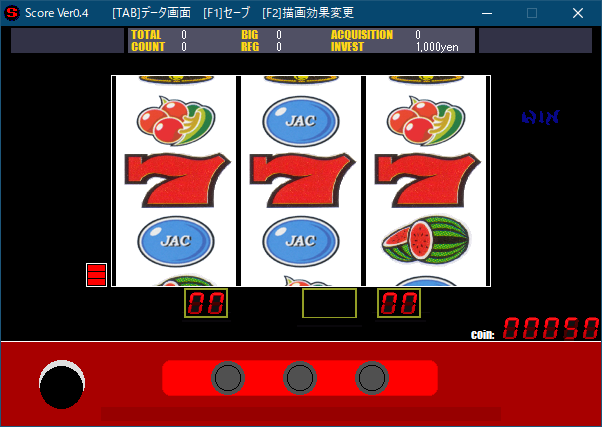

概要
2004年に作られたゲームです。
2024年現在ですが、当時のまま公開します。

オリジナルのスロットゲームです。
一応、大量完全テーブル制御マシンとなってます。現在の最新バージョンは Ver0.4 です。
ファンサイト『SCORE解体新書』はここ ※ネタバレ注意!!自分で発掘したい人は見ない方がいいかも
操作方法
ゲーム進行に必要な操作方法です。これらの操作は、ゲームパッドでも可能です。(ＰＳ用コントローラでのみ動作確認しております)
[↑]or[△] MAXBET&リールスタート
[←]or[□] 左リール停止
[↓]or[×] 中リール停止
[→]or[○] 右リール停止
[SPACE]or[R1] 1BET投入&リールスタート
[TAB]or[START] データ画面表示←→戻る
[F1]or[SELECT] セーブ
[CTRL]or[L1] スランプグラフ画面で使用
※すべてのゲームパッドを保証しているものではありません。
セーブ
ボーナスゲーム以外の通常時、リールが回転していない状態で、
[F1]or[SELECT]を押す事によりセーブする事が出来ます。
ゲーム終了
ウィンドウの「×」ボタンを押して終了してください。
？以外の設定を選んだ場合や、セーブファイルで無い場合、セーブファイルでも1000Ｇ以上消化した場合は、設定を見ることが出来ます。
その際、『play_log.txt』というファイルが生成され、簡易的なプレイログが記録されます。（『play_log.txt』ファイルは削除しても構いません）
ダウンロード
こちらでダウンロードが出来ます。
BIG確率
| 設定 | ＢＩＧ | ＲＥＧ | 機械割 |
| １ | 1/350 | 1/810 | 104.13% |
| ２ | 1/309 | 1/790 | 110.28% |
| ３ | 1/277 | 1/777 | 116.24% |
| ４ | 1/250 | 1/655 | 123.03% |
| ５ | 1/220 | 1/530 | 131.73% |
| ６ | 1/172 | 1/372 | 152.78% |
| Debug | 1/??? | 1/??? | ???.?% |
※機械割は５００万Ｇシミュレーション値です。
ゲーム性
大量リーチ目マシンを目指して作りました。おそらく、リール制御テーブルの量は、特に最近の実際のマシンよりあります。
今までのフリーのスロゲーではあまり見かけた事のないジャンルが特長です。
タイプ的にはＡタイプとなりますが、実はＳＴ機です。
正確に言えば、『内部的にストック→放出』を行わず、ボーナス確率が変動するのでＢモノの部類ですが、
内規通りのストック切れの起こらないＳＴ機仕様と考えていただいて差し支えありません。
ＳＴ機の致命的な部分である”期待できないゾーン”を削除し、ほどよい荒波挙動が期待できるシステムです。
確変タイム と リール消灯
通常時のボーナス確率以外に「確変タイム」が存在します。
この「確変タイム」への突入条件は主に２つ。
まず一つは、ＪＡＣ中の抽選（通常確変）です。
この「通常確変」時のボーナス確率は、ＢＩＧ・ＲＥＧ共に全設定共通の1/98（合成確率1/49）です。
ＪＡＣが一回当たるごとに1/5で抽選され、当選した場合は2G加算されます。
また、この時、左リール中段に赤７が停止（要ビタ押し）していて、且つ、1/5の抽選にパスした場合、3G加算されます。
「確変タイム」中に引いたボーナスから、再び「確変タイム」が加算された場合、上乗せされます。
また、ＢＩＧ中の獲得枚数が500枚を超えた場合、無条件で10Gが加算されます。
もう一つは通常時からいきなり突入（凸確）します。
確率は全設定共通の一定確率で、1G・5G・10G・20Gのいずれかに振り分けられます。
「凸確」時のボーナス確率は上記の「確変タイム」時より高確率です。
「凸確」中にボーナスを引いた場合、残りのゲーム数は「通常確変」に上乗せされます。
「確変タイム」は完全には表面上で確認できません。
しかし、通常時のリール停止時に、いずれかのリールで消灯が発生した場合は、「確変タイム」の期待が高まります。
この時、赤色で消灯した場合、「確変タイム」が確定します。
また、通常時、ガセ消灯も発生します。
「確変タイム」時の消灯は、どのリールでも均等に発生するのに対し、
ガセ消灯は、第一停止＞第二停止＞第三停止の順で、若干発生し易いです。
結果的に、なるべく遅いタイミングで消灯した方が、「確変タイム」の期待度は上がる事になります。
演出
主な演出はリール演出です。
その他は「予告音」です。
予告音には数種類あります。
小役確率
Ver010より、小役カウンタが搭載され小役確率が変更になりました。
各確率の詳細は只今非公開です。
おまけ
ボーナス成立プレイ察知後、一度も３枚掛けで回さずに１枚掛けで揃えると、
スペシャルＢＧＭが流れます。
また、ボーナス成立プレイにボーナスが揃った場合（生入り）も同様です。
BIG中の打ち方
ＢＩＧ中はベル(10枚)とスイカ(5枚)が同一フラグになります。しかし、制御で振り分けられるので常に揃える事は出来ません。
振り分けは、フラグの3/4でベル、1/4で複合奪取が可能です。
ＪＡＣ中は左リール中段に赤７をビタ押し。
ＪＡＣが１回当たるごとに、1/5の確率で確変ゲーム数が+2Ｇ上乗せ。
この時、左リール中段に赤７を止めると、当選時の上乗せが+3Ｇになります。
平均獲得枚数
フル攻略で431.3枚（ハズシは24Ｇまで）
５００枚以上獲得出来ると、確変ゲーム+10Ｇ上乗せ。
更新履歴
2008/02/03 v0.4
2006/08/06 v0.33
2005/06/22 v0.32
2005/05/26 v0.31
2005/05/25 v0.30
2004/10/23 v0.20
2004/10/09 v0.11
2004/09/25 v0.10
2004/09/21 v0.02
2004/09/17 v0.01